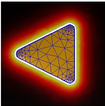

Dipole excitation
Dipole excitations of metallic nanoparticles allow to compute total and radiative scattering rates for dipoles, and to evaluate the photonic local density of states
Contents
Initialization
% initialize DIPOLE object with given dipole positions PT dip = dipole( pt, op ); % pass additional arguments dip = dipole( pt, op, 'PropertyName', PropertyValue ); % provide transition dipole moments DIR dip = dipole( pt, dir, op );
In the initialization, the following parameters and additional properties are used
- pt is a compoint object that defines the dipole positions.
- dir defines the directions of the dipoles, e.g. dir=[0,0,1]. On default dipoles oriented along x, y, and z are considered.
- op is the option structure for the MNPBEM simulations.
- 'pinfty' provides a user-defined unit-sphere discretization for the computation of the radiative scattering rates for retarded simulations.
dipole is a wrapper function that selects from the options and property settings one of several classes.
Methods
Once the dipole excitation is initialized, one can compute the excitation potentials at the boundary of a comparticle object at a given wavelength enei according to
% compute excitation potentials at the boundary of particle P pot = dip( p, enei ); % one can also directly use them in the call to a BEM solver sig = bem \ dip( p, enei );
In addition to excitations, dipole also allows to compute the various decay rates according to
% compute total and radiative scattering rates % RAD0 is the free-space decay rate of the embedding medium [ tot, rad, rad0 ] = dip.decayrate( sig );
For layer structures, one can additionally compute the total and radiative scattering rates for the layer structure alone
% compute total and radiative scattering rates for only layer structure
[ tot, rad, rad0 ] = dip.decayrate0( enei );
Note that our present implementation uses finite differences for the calculation of the dipole potentials and fields. We expect that this approach gives sufficiently accurate results for most plasmonics applications, but might be problematic for dielectric environments consisting of only real permittivities.
Tips and tricks
We recommend to place the dipoles sufficiently far away from the boundary or to refine the boundary elements close to the dipole positions, as shown for instance in demodipstat4.m. As a rule of thumb, the distance between dipoles and boundary elements should be two to three times larger than the extension of the boundary elements.
Contrary to EELS simulations, where the electron beam can cross boundary elements without causing any difficulties, a dipole close to a boundary induces a mirror dipole whose surface charge distribution has to be resolved by that of the discretized particle boundaries. One might solve the problem by separating out the mirror dipole from the additional induced surface charge distribution, but we have not attempted such an approach yet.
Implementation
The total decay rate is computed according to (see e.g. Novotny and Hecht, Principles of Nano Optics, Cambridge Univ. Press, 2006)
![$$ \Gamma_{\rm tot}=\Gamma_{\rm rad}^0+\frac 12\Im m\left[{\bf d}
\cdot{\bf E}_{\rm ind}\right]\,,\quad
\Gamma_{\rm rad}^0=\frac 43n_b k^3\,. $$](bem_ug_dipole_eq13458278558336691812.png)
Here  is the free-space decay rate of the Wigner-Weisskopf approach,
is the free-space decay rate of the Wigner-Weisskopf approach,  is the transition dipole moment,
is the transition dipole moment,  is the refractive index of the embedding medium, and
is the refractive index of the embedding medium, and  is the induced electric field at the position of the dipole. For the quasistatic approximation the above expression has to be treated with some care, as discussed in Anger et al., Phys. Rev. Lett. 96, 113002 (2006). For quasistatic simulations, the radiative decay rate is
is the induced electric field at the position of the dipole. For the quasistatic approximation the above expression has to be treated with some care, as discussed in Anger et al., Phys. Rev. Lett. 96, 113002 (2006). For quasistatic simulations, the radiative decay rate is

where  is the induced dipole moment of the nanoparticle. For retarded simulations, the radiative decay rate is computed by integrating the outgoing Poynting vector in the farfield zone over a unit sphere, similarly to the computation of the scattering cross section for plane wave excitation.
is the induced dipole moment of the nanoparticle. For retarded simulations, the radiative decay rate is computed by integrating the outgoing Poynting vector in the farfield zone over a unit sphere, similarly to the computation of the scattering cross section for plane wave excitation.
Dyadic Green function
The dyadic Green function relates the electric field at some position  to a unit dipole at position
to a unit dipole at position  through
through

Conveniently one decomposes the Green function  into a reflected part, that accounts for the induced fields of the dielectric particle, and a free-space part. The reflected part is given by the induced electric field computed for an oscillating electric dipole with unit dipole moment. One can thus use dipole objects to compute the dyadic Green function of Maxwell's theory.
into a reflected part, that accounts for the induced fields of the dielectric particle, and a free-space part. The reflected part is given by the induced electric field computed for an oscillating electric dipole with unit dipole moment. One can thus use dipole objects to compute the dyadic Green function of Maxwell's theory.
Examples
In the following example we compute the LDOS(z) for a nanotriangle in the plane of the triangle.
% BEM options op = bemoptions( 'sim', 'stat' ); % triangular particle [ p, poly ] = tripolygon( round( polygon( 3, 'size', [ 30, 30 ] ) ), edgeprofile( 5 ) ); % make COMPARTICLE object p = comparticle( { epsconst( 1 ), epstable( 'gold.dat' ) }, { p }, [ 2, 1 ], 1, op ); % polygons for plate around nanoparticle poly1 = shiftbnd( set( poly, 'z', 0 ), 1 ); poly2 = polygon3( polygon( 4, 'size', [ 50, 50 ] ), 0 ); % make plate around triangle p2 = plate( [ poly1, poly2 ] ); % dipole positions at plate vertices pt = compoint( p, p2.verts, op ); % make dipole excitation with transition dipole moment in z-direction dip = dipole( pt, [ 0, 0, 1 ], op ); % initialize BEM solver bem = bemsolver( p, op ); % compute surface charge sig = bem \ dip( p, 600 ); % total dipole decay rate tot = dip.decayrate( sig ); % plot particle and decay rate on plate plot( p, 'EdgeColor', 'b' ); plot( p2, log10( tot ) ); colormap hot( 255 );

Copyright 2017 Ulrich Hohenester